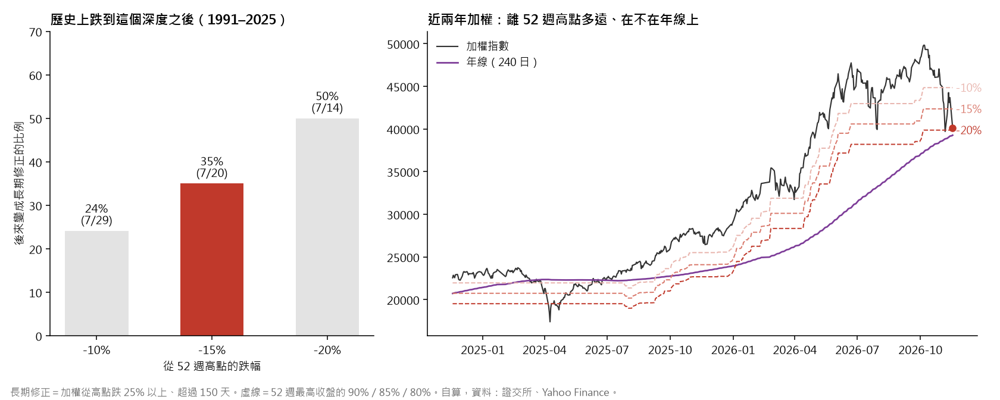

現在：修正中，還在年線上（離高點 −19.5%）。
不先知先覺，但不後知後覺。台股找不到能提早預警的指標（原因見下方），所以這一頁不預測高點，只回答兩件事：現在跌多深，以及歷史上跌到這個深度之後通常怎麼走。這是量尺，不是預言，也不構成投資建議。
離 52 週高點−19.5%加權 40,092，52 週高 49,823
離年線+2.1%年線 39,266（還在上方）
季線失守是季線下 14 天，斜率 -0.02%
MM 台灣衰退機率0.15%資料月 2026-10（≥50% 才算衰退確認）
歷史上跌到這個深度之後
| 從 52 週高點 | 次數 | 後來變成長期修正 | 之後還會再跌（中位，全部） | 之後還會再跌（中位，長期修正那幾次） |
|---|---|---|---|---|
| 跌到 −10% | 29 | 7/29（24%） | −8% | −32% |
| 跌到 −15%（現在在這一格） | 20 | 7/20（35%） | −12% | −29% |
| 跌到 −20% | 14 | 7/14（50%） | −11% | −25% |
長期修正＝加權從高點跌 25% 以上、超過 150 天；1991–2025 年共 7 次落在這個範圍內（1991、1994、2000、2002、2007、2011、2022）。跌得越深，變成長期修正的比例越高；跌到 −20% 時大約一半一半。

跌破年線之後
1991–2025 年加權跌破年線（連 3 日收在年線下）19 次。之後 12 個月內，中位數還會再跌約 20%（隨便挑一天約 11%）；但結果分成兩種：12 次又跌了 11%～52%，7 次幾乎就是底（0%～7%），中間沒有。之後 12 個月的報酬中位約 +4%。
跌破年線前月線、季線有沒有反覆糾結，分不出這兩種結果。跌破後很快又站回年線也很常見（19 次有 15 次在一個月內），所以「站回年線」不等於修正結束。
為什麼找不到台股的領先指標
我把 1990 年以來能取得的指標都拿來回測：亮燈之後 6 個月內出現長期修正的比例，和「隨便挑一天」比。沒有一個明顯勝出，而且官方數據都很晚。
| 測過的指標 | 結果 |
|---|---|
| 外銷訂單、記憶體原廠營收（停止成長） | 兩個一起亮約 36%～46%，隨便一天約 23%；樣本只有 3 次，不足以稱為預測 |
| 出口年增轉負、國發會景氣燈號 | 太晚：出口轉負公布時，那次修正平均已跌掉七成 |
| 製造業存銷比、PMI 新訂單減存貨 | 差距小、檢定次數多，不可靠；存銷比只到 2023 年 |
| 國發會領先÷落後指標（從高峰反轉） | 36%，和隨便一天的 36% 一樣；而且多半在高點之後才亮 |
| M平方 台灣景氣衰退機率 | 每次收縮期都抓到，但升破 50% 時，長期修正中位已跌約七成：是確認，不是預警 |
| 均線糾結、下跌速度、法人與融資 | 分不出普通修正和長期修正；大部分長期修正是從高點直接急跌，沒有糾結 |
原因（推論）：
- 股價領先需求：7 次長期修正中有 6 次，跌到 −10%、−15%、−20% 時外銷訂單都還在成長。市場先反映，訂單幾個月後才轉弱。
- 台股的大跌常常是外部衝擊：網路泡沫、金融海嘯、疫情、關稅，起點不在台灣的需求數據裡。
- 樣本太少：35 年只有 7～9 次長期修正，任何指標都很容易「事後看起來很準」。
所以做法是：不先知先覺，但不後知後覺。不去猜高點，而是每月看清楚現在跌多深、年線在哪裡；需求數據只用來事後確認這次是不是製造業循環。
方法與限制
- 深度用「比近 252 個交易日最高收盤跌多少」計算；同一段修正同一深度只算第一次。
- 歷史比例只有 14～29 次事件、7 次長期修正，是描述過去，不保證未來。
- M平方 衰退機率由 M平方 公布，本頁每月照抄最新數值；它的 2024 年以前歷史是模型回填。
- 更正紀錄：本頁 2026-11-16 上線時以「外銷訂單＋記憶體營收雙源燈」為預警；複查發現該燈在谷底回升時也會亮，排除後只比隨機略好，11-16 撤回，11-17 改版為本頁。研究經另一個 Claude 審查者與 Grok 兩輪獨立審查。
資料：證交所加權指數、經濟部外銷訂單、財政部出口、國發會景氣指標、公開資訊觀測站月營收、M平方。德克 mur mur｜研究整理，不構成任何投資建議。